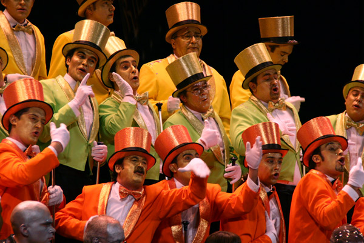
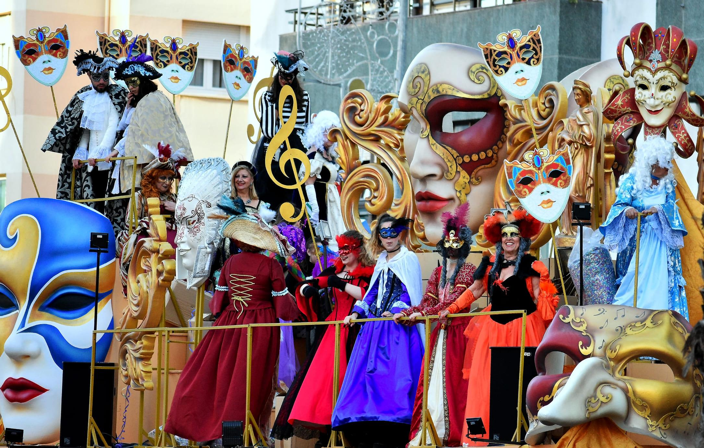
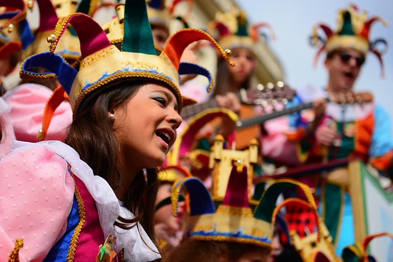

INICIO
HISTORIA
AGRUPACIONES
CONCURSO

Esta es la página web del Carnval de Cádiz, aquí encontrarás todas las curiosidades sobre la historia, agrupaciones y concurso.
El Carnaval de Cádiz es uno de los carnavales más famosos e importantes de España, por lo que ha sido reconocido en 1980 conjuntamente con el Carnaval de Santa Cruz de Tenerife, con la declaración de Fiesta de Interés Turístico Internacional. Ambos son los primeros carnavales de España con tal distinción. Precisamente desde el año 2014, el Carnaval de Cádiz y el Carnaval de Santa Cruz de Tenerife están hermanados, coincidiendo con el 30 aniversario del hermanamiento de ambas ciudades que tuvo lugar en 1984.
Frente a la espectacularidad de otros carnavales, la imagen jocosa y divertida del Carnaval de Cádiz lo convierten en una fiesta única, que merece la pena conocer. Durante estos días no faltan otros espectáculos para que la fiesta en Cádiz sea completa. La fecha de inicio del Concurso en 2024 ya está confirmada y será el martes 9 de enero. La Gran Final será el viernes 9 de febrero y la fiesta en la calle comenzará el sábado 10 con el pregón.

